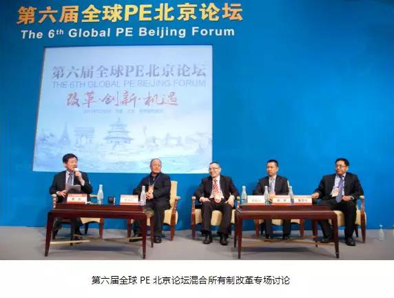
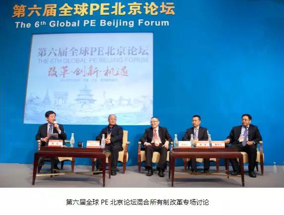
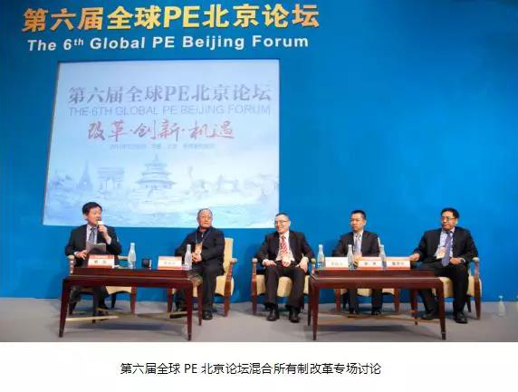

1、2008年-2009年，中国PE行业刚刚崭露头角：
2008年，第一届全球PE北京论坛，“聚焦金融危机下的股权投资”。
2009年，第二届全球PE北京论坛，关注金融危机下中国PE。
２、2010年-2012年，中国PE行业已初具规模：
2010年，第三届全球PE北京论坛，探讨中国PE的退出环境，以及人民币基金与美元基金的融合发展。
2010年开始，全球PE北京论坛上开始出现更多政府相关监管部门的声音。他们与业界机构相聚于此，共同关注和探讨股权投资行业发展。
2012年，第四届全球PE北京论坛，设置了GP专场、LP专场、政策专场、退出专场、投资专场等专场讨论，从PE行业不同维度为行业建言献策。
３、2013年-2015年，中国PE行业经历快速发展时期：
2013年，第五届全球PE北京论坛，关注PE行业快速发展下的政策环境和投资机遇。
 2014年，第六届全球PE北京论坛，以“改革、创新、机遇”为主题，关注改革背景下的PE发展机遇。

2014年，第六届全球PE北京论坛，以“改革、创新、机遇”为主题，关注改革背景下的PE发展机遇。


 2015年，第七届全球PE北京论坛，“创新、改革、实体经济”为主题，探讨PE对实体经济的重要性。
４、2016年-2017年，中国PE行业从爆发式增长渐入成熟时期：
2016年，第八届全球PE北京论坛，“转型期的股权投资：信心与机会”为主题，股权投资作为不可或缺的“智慧资本”，在中国经济进入新常态后，应当充满信心，把握机会。
2017年，第九届全球PE北京论坛，“发展、助力、创新”为主题，探讨进一步发展股权投资，助力实体经济。
2018年，第十届全球PE北京论坛
2015年，第七届全球PE北京论坛，“创新、改革、实体经济”为主题，探讨PE对实体经济的重要性。
４、2016年-2017年，中国PE行业从爆发式增长渐入成熟时期：
2016年，第八届全球PE北京论坛，“转型期的股权投资：信心与机会”为主题，股权投资作为不可或缺的“智慧资本”，在中国经济进入新常态后，应当充满信心，把握机会。
2017年，第九届全球PE北京论坛，“发展、助力、创新”为主题，探讨进一步发展股权投资，助力实体经济。
2018年，第十届全球PE北京论坛
2014年，第六届全球PE北京论坛，以“改革、创新、机遇”为主题，关注改革背景下的PE发展机遇。

2015年，第七届全球PE北京论坛，“创新、改革、实体经济”为主题，探讨PE对实体经济的重要性。
４、2016年-2017年，中国PE行业从爆发式增长渐入成熟时期：
2016年，第八届全球PE北京论坛，“转型期的股权投资：信心与机会”为主题，股权投资作为不可或缺的“智慧资本”，在中国经济进入新常态后，应当充满信心，把握机会。
2017年，第九届全球PE北京论坛，“发展、助力、创新”为主题，探讨进一步发展股权投资，助力实体经济。
2018年，第十届全球PE北京论坛